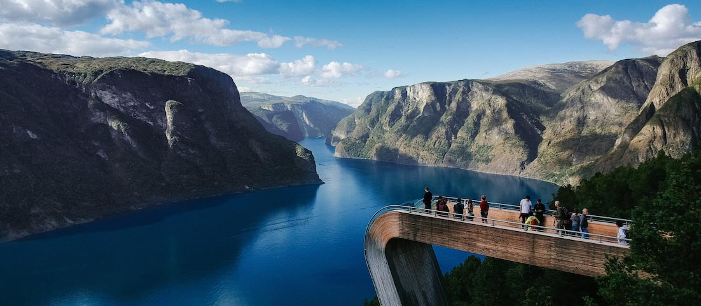

My Story
I'm Gonzalo I had a dream about traveling around Norway for 1 year as a fulltime blogger. My goal is to show how much the country has to offer. To inspire other to do the same. I work as a frontend developer and I will share my every day experiences, enjoy!